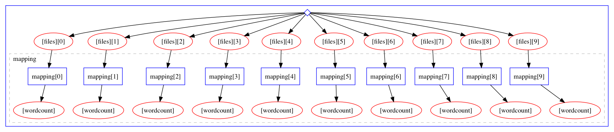

Map Reduce - Parallel Processing of Data
Where is this going?
This example will walk you through a simple "Map-Reduce" style workflow in which a number of work items are processed in parallel and then a summary job combined the outputs of the work items into a single output.
The final workflow will look like this:

Preparation: Making Some Dummy input Data
In this case, we will consider the generation of the input data to not be part of the workflow, but rather assume, that we already have some input files available. Here, we will create a directory and generate ten text files:
mkdir inputdata
for i in $(seq -f "%05g" 1 10);do echo "Hello $i" > inputdata/input_$i.txt;done
Voila:
ls -lrt inputdata
total 40
-rw-r--r-- 1 lukas staff 12 Dec 3 16:16 input_00001.txt
-rw-r--r-- 1 lukas staff 12 Dec 3 16:16 input_00002.txt
-rw-r--r-- 1 lukas staff 12 Dec 3 16:16 input_00003.txt
-rw-r--r-- 1 lukas staff 12 Dec 3 16:16 input_00004.txt
-rw-r--r-- 1 lukas staff 12 Dec 3 16:16 input_00005.txt
-rw-r--r-- 1 lukas staff 12 Dec 3 16:16 input_00006.txt
-rw-r--r-- 1 lukas staff 12 Dec 3 16:16 input_00007.txt
-rw-r--r-- 1 lukas staff 12 Dec 3 16:16 input_00008.txt
-rw-r--r-- 1 lukas staff 12 Dec 3 16:16 input_00009.txt
-rw-r--r-- 1 lukas staff 12 Dec 3 16:16 input_00010.txt
Counting Words in a File:
For each file we want to count the number of words in it. Therefore we will provide a
packtivity definition as follows (for convenient we will put the definition under
a file steps.yml and identify it with the name count_words_in_file):
count_words_in_file:
process:
process_type: interpolated-script-cmd
script: |
wc -w {inputfile} |awk '{{print $1}}' > {outputfile}
environment:
environment_type: docker-encapsulated
image: 'busybox'
publisher:
publisher_type: interpolated-pub
publish:
wordcount: '{outputfile}'
Let's go through the sections
- ...
- ...
- ...
Let's make sure we got the syntax correct:
packtivity-validate 'steps.yml#/count_words_in_file'
packtivity definition is valid
Testing
We can test this packtivity on a single file like this:
packtivity-run 'steps.yml#/count_words_in_file' \
-p inputfile=$PWD/inputdata/input_00010.txt \
-p outputfile="'{workdir}/output.txt'" \
--read inputdata \
--write test_counting
cat test_counting/output.txt
2
Write the Workflow (part 1)
First, let's learn how to pass input data to the workflow by starting with an empty workflow:
In a file called: workflow.yml, just put a single line:
stages: []
this is a workflow that does not do anything, but initialize itself. Let's pass in some input data:
yadage-run workdir workflow.yml -p files='"*.txt"' -d initdir=$PWD/inputdata --visualize

That is, the workflow is initialized such that the special init stage has as its "output" the ten
textfiles we just created. To see how to access references to these files from within the workflow
we can use the yadage-util command line tool to test a selection
yadage-util testsel workdir/_yadage/yadage_snapshot_workflow.json '{step: init, output: files}'
[
"/Users/lukas/Code/yadagedev/tutorial/specs/mapreduce/inputdata/input_00001.txt",
"/Users/lukas/Code/yadagedev/tutorial/specs/mapreduce/inputdata/input_00002.txt",
"/Users/lukas/Code/yadagedev/tutorial/specs/mapreduce/inputdata/input_00003.txt",
"/Users/lukas/Code/yadagedev/tutorial/specs/mapreduce/inputdata/input_00004.txt",
"/Users/lukas/Code/yadagedev/tutorial/specs/mapreduce/inputdata/input_00005.txt",
"/Users/lukas/Code/yadagedev/tutorial/specs/mapreduce/inputdata/input_00006.txt",
"/Users/lukas/Code/yadagedev/tutorial/specs/mapreduce/inputdata/input_00007.txt",
"/Users/lukas/Code/yadagedev/tutorial/specs/mapreduce/inputdata/input_00008.txt",
"/Users/lukas/Code/yadagedev/tutorial/specs/mapreduce/inputdata/input_00009.txt",
"/Users/lukas/Code/yadagedev/tutorial/specs/mapreduce/inputdata/input_00010.txt"
]
That is, when used within a workflow spec {step: init, output: files} will resolve to this array of filenames.
Writing the mapping stage:
We will now use the selection expression {step: init, output: files} to extend the workflow and schedule
one processing step for each input file:
stages:
- name: mapping
dependencies: [init]
scheduler:
scheduler_type: 'multistep-stage'
parameters:
inputfile: {step: init, output: files}
outputfile: '{workdir}/output.txt'
scatter:
method: zip
parameters: [inputfile]
step: {$ref: 'steps.yml#/count_words_in_file'}
rm -rf workdir
yadage-run workdir workflow.yml -p files='"*.txt"' -d initdir=$PWD/inputdata --visualize

Combining Word Counts
We now have the workflow in shape to process all files in parallel. We can now test a selection to see how to get file references to the outputfiles of these individual steps:
yadage-util testsel workdir/_yadage/yadage_snapshot_workflow.json '{steps: mapping, output: wordcount}'
[
"/Users/lukas/Code/yadagedev/tutorial/specs/mapreduce/workdir/mapping_0/output.txt",
"/Users/lukas/Code/yadagedev/tutorial/specs/mapreduce/workdir/mapping_1/output.txt",
"/Users/lukas/Code/yadagedev/tutorial/specs/mapreduce/workdir/mapping_2/output.txt",
"/Users/lukas/Code/yadagedev/tutorial/specs/mapreduce/workdir/mapping_3/output.txt",
"/Users/lukas/Code/yadagedev/tutorial/specs/mapreduce/workdir/mapping_4/output.txt",
"/Users/lukas/Code/yadagedev/tutorial/specs/mapreduce/workdir/mapping_5/output.txt",
"/Users/lukas/Code/yadagedev/tutorial/specs/mapreduce/workdir/mapping_6/output.txt",
"/Users/lukas/Code/yadagedev/tutorial/specs/mapreduce/workdir/mapping_7/output.txt",
"/Users/lukas/Code/yadagedev/tutorial/specs/mapreduce/workdir/mapping_8/output.txt",
"/Users/lukas/Code/yadagedev/tutorial/specs/mapreduce/workdir/mapping_9/output.txt"
]
Writing a Packtivity
Armed with such a list of files, we can now write a new packtivity that will read the
contents of each file (which will be the word counts from their respective input files)
and add them up using the awk utility
combine_wordcounts:
process:
process_type: interpolated-script-cmd
script: |
cat {inputfiles} | awk '{{a+=$1}} END {{print a}}'> {outputfile}
environment:
environment_type: docker-encapsulated
image: 'busybox'
publisher:
publisher_type: interpolated-pub
publish:
combined_counts: '{outputfile}'
As always, make sure we at least pass a superficial syntax check:
packtivity-validate 'steps.yml#/combine_wordcounts'
packtivity definition is valid
To test this packtivity spec, we can use the above input list to generate a input JSON document for the packtivity which will have the structure
{"inputfiles: [...list of iles...], "outputfile": "{workdir}/output.txt"}
To generate this input doc, we will use the jq utility
yadage-util testsel \
workdir/_yadage/yadage_snapshot_workflow.json '{steps: mapping, output: wordcount}' \
|jq '{inputfiles: ., outputfile: "{workdir}/output.txt"}' > test.json
cat test.json
{
"inputfiles": [
"/Users/lukas/Code/yadagedev/tutorial/specs/mapreduce/workdir/mapping_0/output.txt",
"/Users/lukas/Code/yadagedev/tutorial/specs/mapreduce/workdir/mapping_1/output.txt",
"/Users/lukas/Code/yadagedev/tutorial/specs/mapreduce/workdir/mapping_2/output.txt",
"/Users/lukas/Code/yadagedev/tutorial/specs/mapreduce/workdir/mapping_3/output.txt",
"/Users/lukas/Code/yadagedev/tutorial/specs/mapreduce/workdir/mapping_4/output.txt",
"/Users/lukas/Code/yadagedev/tutorial/specs/mapreduce/workdir/mapping_5/output.txt",
"/Users/lukas/Code/yadagedev/tutorial/specs/mapreduce/workdir/mapping_6/output.txt",
"/Users/lukas/Code/yadagedev/tutorial/specs/mapreduce/workdir/mapping_7/output.txt",
"/Users/lukas/Code/yadagedev/tutorial/specs/mapreduce/workdir/mapping_8/output.txt",
"/Users/lukas/Code/yadagedev/tutorial/specs/mapreduce/workdir/mapping_9/output.txt"
],
"outputfile": "{workdir}/output.txt"
}
packtivity-run 'steps.yml#/combine_wordcounts' test.json --write test_combination --read workdir
Checking the output file, we see that it correctly combined the word count (2 words each in ten files)
cat test_combination/output.txt
20
Writing the Combination Stage
We now add a single step stage to the workflow to do the equivalent thing we just did manually
stages:
- name: mapping
dependencies: [init]
scheduler:
scheduler_type: 'multistep-stage'
parameters:
inputfile: {step: init, output: files}
outputfile: '{workdir}/output.txt'
scatter:
method: zip
parameters: [inputfile]
step: {$ref: 'steps.yml#/count_words_in_file'}
- name: reduce
dependencies: [mapping]
scheduler:
scheduler_type: 'singlestep-stage'
parameters:
inputfiles: {steps: mapping, output: wordcount}
outputfile: '{workdir}/output.txt'
step: {$ref: 'steps.yml#/combine_wordcounts'}
and run again:
rm -rf workdir
yadage-run workdir workflow.yml -p files='"*.txt"' -d initdir=$PWD/inputdata --visualize
Let's check that the workflow worked out OK: